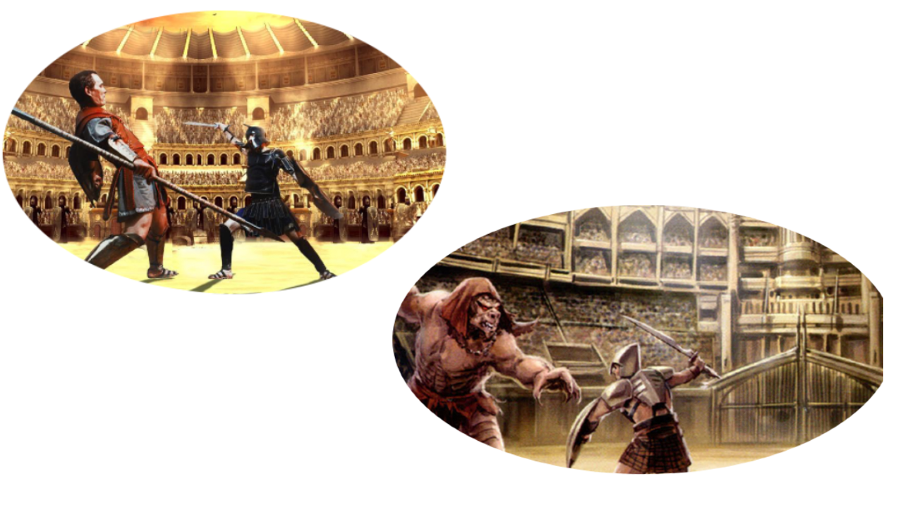

In Xena we have two main activities, the first activity is called death-fighting. Although the name is very scary, the sport isn't.

Death fighting is Xenas national sport. It is like boxing, but with swords and other dangerous weapons. To win Death fighting you need to knock your opponent out. Rarely anyone dies in Death fighting because they are all wearing heavy protection armor. It got the name "Death Fighting" from the founder of Xena, Domonic Death.
This next sport isn't as safe as Death fighting... Its called hide-in-go-shoot. Its a remake of the popluar game hide-in-go-seek. Accept it has a terrifying twist. In the earth version, when you see someone they are out. In the Xena version of hide-in-go-seek, the seeker has a bow and arrow. Once they see someone they shoot them. The arrows are small so most injuries are minor, but people aren't encouraged to play this game because many people get hurt.